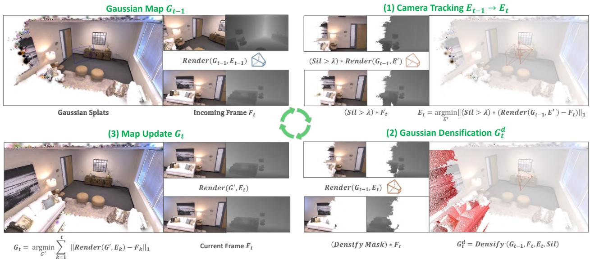
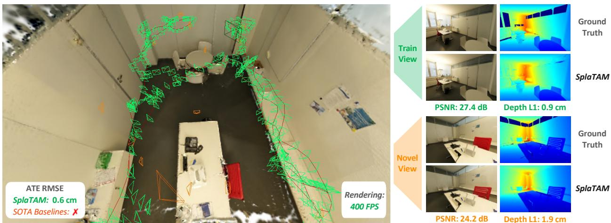
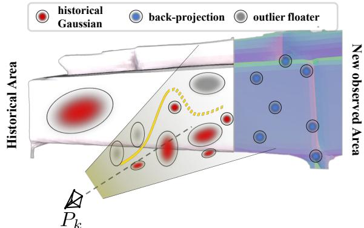
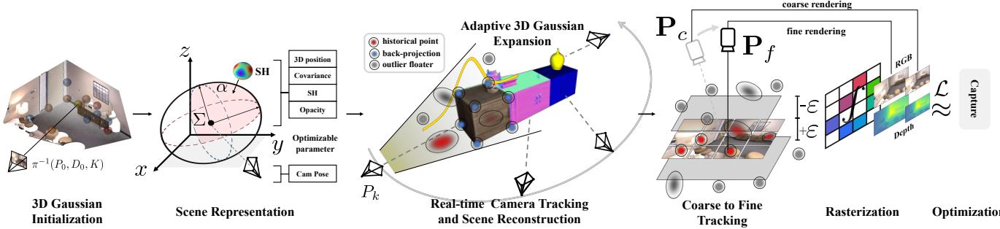

本节目标
读完你应该能：说出除了「看梯度大小」之外，判断「哪里该加高斯」的另外两种判据；解释「轮廓掩码（silhouette mask）」为什么比逐像素比深度更稳；知道 GS-SLAM 的「由粗到细」在筛选什么；并能把两篇的取舍放进一张表里比。
和前面课程怎么接
直接接着上一课 0116（3DGS 原著的自适应密度控制：看视角空间位置梯度、clone / split、每 3000 次迭代压不透明度）与 0117（MonoGS：用渲染误差反传位姿）。这一课要回答的是「这两篇把密度控制的判据换成了什么」。再往前，第一季 0015 只引用未展开的那一步，到这里算是彻底讲完了。
1. 两篇论文，同一个问题
先交代组织方式。这一课是 组课：两篇 2024 年的工作合在一节里读，因为它们在回答同一个问题：
这一课的问题意识
3DGS 的高斯不是一次放好的，而是边优化边增删的。那么——「哪里该补一个新高斯」这件事，凭什么判断？
这个问题在离线重建里可以很奢侈地回答（慢慢试、反复看）；但在在线 SLAM 里不行：一来没有足够的视角，二来每一帧的算力预算都是固定的。所以两篇论文各自提了一种新的判据。
先看一张总览图，说明这一节课要讲的两件事：
怎么看这张图：① 左格里，深色实线是真实杯子的轮廓，灰色块是系统渲染出来的剪影——注意灰块比真实轮廓小了一圈；② 那一圈红色虚线就是「真实物体在这里、但地图里什么都没有」的区域，也就是该补高斯的地方；③ 右格是另一种思路：拿每个像素的渲染深度和实测深度逐一对减法。它的麻烦在于，深度传感器本身有噪声，一个像素的深度跳变就可能误判出一整团高斯；④ 而剪影是把很多像素的信息合起来回答一个是非题——「这块到底建过没有」，所以抗噪得多。
要记住的一句话：SplaTAM 的关键洞察是——「地图的空间前沿在哪」这件事，显式表示能一语回答，隐式表示很难回答。
2. 先立一个统一框架
在逐篇讲之前，先把「该不该加高斯」这件事拆成三个可比较的层次。这样两篇论文的差异就一目了然了。
| 判据 | 谁在用 | 核心问题 | 代价 |
|---|---|---|---|
| 看梯度大小 | 3DGS 原著（0116） | 「这里优化得很难受吗」——视角空间位置梯度的平均幅度是否超过阈值 | 需要 SfM 给的准确初始点云；在线场景不成立 |
| 看剪影 | SplaTAM | 「这一块地图里到底有没有东西」——渲染出的剪影与真实前景对不上 | 需要前景/背景能分开（对无边界场景要多想一步） |
| 看不透明度 + 深度差 | GS-SLAM | 「这一像素有没有被现有的高斯盖住」+「实测深度是否更靠前」 | 依赖高质量深度；阈值要调 |
三行摆在一起，你会发现它们是从「难」到「容易」排的：梯度判据最通用但最依赖初始条件；剪影判据最干脆但需要「前景」这个概念；不透明度加深度差最好实现但吃深度质量。两篇论文都选了 RGB-D 输入，正是因为有了深度，第三行这条路才走得通。
还有一件事需要先说明白：这两篇都在争「第一个」。SplaTAM 的摘要写的是「第一个利用显式体积表示（即 3D 高斯），从单台未给位姿的 RGB-D 相机做高保真重建」；GS-SLAM 的摘要写的是「第一个使用 3D 高斯场景表示的 RGB-D 稠密 SLAM 系统」。两句话的限定词不一样，所以严格说它们各自在自己的表述下都成立。本课程不做排名，把它们如实并列——你以后在文献里看到「first」时，一定要连读它后面的限定语。
3. SplaTAM：用轮廓掩码判断「哪里还没盖住」
先看它的高斯长什么样，因为这是它比原著「简化」最明显的地方。
每个高斯要存位置、协方差（四元数 + 尺度）、不透明度，外加球谐系数来表示「从不同角度看颜色会变」。参数多、表达力强。
把高斯砍到只剩 8 个参数：3 个位置 + 3 个 RGB 颜色 + 1 个半径 + 1 个不透明度。没有球谐、而且是各向同性——也就是说每个高斯是个圆球，不是椭球。
它的高斯函数因此写得很简单：
$o$ 是不透明度，$\boldsymbol{\mu}$ 是球心，$r$ 是半径。三个式子就把原著的「椭球 + 球谐」换成了「圆球 + 固定颜色」。
为什么敢这么砍？因为它手里有深度。单目最大的困难是「这个像素有多远」只能猜，猜错就会长出浮空团；而 RGB-D 直接给了深度，尺度和位置都是明确的。既然几何信息已经很硬，就不必再靠各向异性椭球和视角相关颜色去「拟合」——这是用输入换表示的典型操作。
真正的主角是它新加的那个量——轮廓（silhouette）。除了颜色和深度，它让渲染器多输出一张图：
这个式子和颜色渲染的样子几乎一样，只是把「颜色」换成了「这个高斯在这点的密度 $f_i$」。所以 $S(\mathbf{p})$ 的含义是：这个像素被高斯覆盖的程度——接近 1 说明地图在这里有东西，接近 0 说明这里还是空的。
有了它，增密判据就变成一句话：
拆开看：要么这个像素根本没被覆盖（$S\lt 0.5$），要么实测深度比渲染深度更靠前、并且深度误差大得离谱（超过中位深度误差的 50 倍）——后者说明「前面应该还有个东西，但地图里没有」。满足任一条，就在这个像素反投影出的位置放一个新高斯。
论文的系统总览图把这套流程画得很清楚：

（中译：SplaTAM 总览。左上：每一步的输入是当前 RGB-D 帧，以及我们此前建好的、代表已见场景的 3D 高斯地图。右上：步骤 1 用剪影引导的可微渲染估计新图像的相机位姿。右下：步骤 2 依据渲染出的剪影与输入深度扩充地图容量（加入新高斯）。左下：步骤 3 用可微渲染更新底层高斯地图。）
怎么看这张图：① 请按「右上 → 右下 → 左下」这个顺序读，对应 跟踪 → 增密 → 建图三步；② 注意右下那一步的输入里明确写着 rendered silhouette——剪影是增密的直接依据，不是副产品；③ 左下那一步原图注特意强调「不用剪影掩码，因为我们想在所有像素上优化」——这说明剪影在这套系统里是分场景使用的：跟踪时用它筛掉没建过图的地方，建图时要全图一起优化。
一个诚实的提醒：本地资料库里 SplaTAM 只有 3 张图可用（Fig. 1 / Fig. 2 / Fig. 3），本课引用了其中两张，没有为了凑数硬塞别的图。
为什么说「剪影」这个思路在原理上比逐像素比深度更适合 SLAM？论文在动机那一节给了一段非常关键的话，值得整段记住：
「具有显式空间范围的地图：现有地图的空间前沿可以很容易地被控制——只在过去观测到的场景部分加入高斯。给定一张新图像，这让我们可以通过渲染一张剪影，高效地识别出场景的哪些部分是新的内容（在地图的空间前沿之外）。这对相机跟踪至关重要，因为我们只想把场景中已经建过图的部分与新的图像做比较。而这对隐式地图表示是很困难的，因为在针对未建图空间做基于梯度的优化时，网络会经历全局性的改变。」
这段话值得反复读。它指出了隐式表示的一个结构性弱点：神经网络是「牵一发动全身」的——你去优化那块还没建图的空间，整个网络的输出都会跟着变，包括你以为已经建好的地方。而高斯的显式性让「哪里建过、哪里没建过」成为一个可以直接问出来的问题。这就把上一课「高斯显式到底显在哪」落到了实处。
论文的消融实验也把这件事量化了：如果去掉剪影掩码，跟踪会彻底失败（Replica Room 0 上 ATE 从 0.27 cm 恶化到 115.80 cm）；另外，跟踪时用的剪影阈值取 0.99（只用「几乎确定已建好」的像素），而增密时用的是 0.5——论文说，把跟踪阈值从 0.5 提到 0.99 带来了误差上约 5 倍的降低。
互动判断
SplaTAM 跟踪时只在剪影值 $S(\mathbf{p})\gt 0.99$ 的像素上算误差（也就是「几乎确定已经建过图」的地方）。为什么不干脆用全部像素？
4. SplaTAM：位姿从哪来，它支持单目吗
位姿这一侧，SplaTAM 走的是和上一课 MonoGS 同一条路——可微渲染的光度/几何误差反传，但用法上有一处很关键的不同：它只在地图覆盖到的地方算误差。
$C(\mathbf{p})$ 是渲染颜色、$D(\mathbf{p})$ 是渲染深度，两者都和实测值做 L1 距离；求和范围被剪影限制住了。颜色项前面的 0.5 是经验权重——论文解释得很实在：因为颜色残差的范围（约 0.01–0.03）比深度残差（约 0.002–0.006）大，所以要压一压，不然颜色项会独占主导权。
位姿初值则用匀速模型往前推（把上一帧的位姿按上一个速度外推），然后才开始梯度下降。消融显示这一步也很重要：去掉速度外推，跟踪误差会大 10 倍以上。
它支持单目吗？——不支持
SplaTAM 的摘要、标题、实验设置都把输入写死为 RGB-D（论文原话是「from a single unposed RGB-D camera」），所有基准测试也都在 RGB-D 数据集上。它没有给出单目配置。
这不是偶然：它的整套增密机制都吃深度——判据里有「实测深度是否比渲染深度更靠前」这一条，新高斯的位置也直接由深度反投影得到。把深度抽掉，这套机制就不成立了。
这可能就是这两篇工作最容易被忽略的差别：同样是 2024 年、同样是高斯 SLAM，上一课的 MonoGS 是纯单目（3 fps），这一课的 SplaTAM 是纯 RGB-D。它们不是同一个问题的两种解法，而是两条平行的取舍线：省掉深度传感器，就得用更复杂的表示和更多的迭代去补；有了深度传感器，就可以把表示砍到 8 个参数、把速度拉上去。

（中译：SplaTAM 能在具有挑战的真实场景里做精确跟踪与高保真重建。它通过对显式体积表示——即 3D 高斯——做在线优化、并用可微渲染来实现。左：展示高保真 3D 高斯地图，以及训练视角（SLAM 输入）与新视角的相机视锥。可以看到，即便在无纹理环境里相邻相机之间位移很大，SplaTAM 仍达到亚厘米级定位。右：SplaTAM 能以 400 FPS、876 × 584 的分辨率对训练视角和新视角做照片级渲染。）
怎么看这张图：① 左边那些小锥体就是相机拍过的位置，它们之间的间隔并不小——原文特意说这是「无纹理环境 + 大位移」，也就是最考验跟踪的设定（传统特征法在这种地方会直接跟丢）；② 右边是渲染结果，注意这是 400 FPS 下的画质；③ 请把「亚厘米级」和「无纹理」这两个词连起来读——这正是显式高斯表示+深度带来的红利。
要记住的一句话：这套系统的卖点不是「又快又好」，而是在传统方法会失败的场景里仍然跟得住。
运行开销的账也报得很清楚（Replica 数据集，跟踪/建图的每帧耗时）：SplaTAM 跟踪 1.00 s/帧、建图 1.44 s/帧，ATE 0.27 cm；它还有一个精简版 SplaTAM-S，把每帧耗时压到 0.19 s 与 0.33 s，ATE 略升到 0.39 cm。对照 NICE-SLAM（1.18 s / 2.04 s，ATE 0.97 cm）与 Point-SLAM（0.76 s / 4.50 s，ATE 0.61 cm），可以看出它的建图那一步快得多。
原文承认的边界是：对运动模糊、大深度噪声、剧烈旋转敏感；并且需要已知内参与稠密深度。
5. GS-SLAM：自适应扩张与由粗到细
现在看第二篇。GS-SLAM 的表示比 SplaTAM 更接近原著：它有协方差分解 $\Sigma=RSS^\top R^\top$，投影式是 $\Sigma'=JP^{-1}\Sigma P^{-\top}J^\top$（$P$ 为投影矩阵），而且它保留了 1 阶球谐（12 个系数）——代价我们待会儿在内存那一栏会看到。
它和原著最大的分歧在于「怎么加、怎么删」。论文把它叫自适应 3D 高斯扩张策略（adaptive 3D Gaussian expansion strategy），并明确说这一步是「把 3D 高斯表示从『合成单个静态物体』扩展到『重建整个场景』的关键」。注意这句潜台词：原著那套密度控制是为离线、有准确点云输入的场景设计的，直接搬到在线 SLAM 上会崩。论文的消融也说得很直白——如果不做「加」（只用第一帧初始化然后纯优化），「这个策略会彻底崩溃，因为原著的密度控制在没有准确点云输入时无法胜任实时建图任务」。
它的做法分两步：
在每个关键帧，先渲染一遍 RGB-D，算出每个像素的累计不透明度 $T=\sum_i\alpha_i\prod_{j\lt i}(1-\alpha_j)$。一个像素被判为「不可靠」（un-reliable），条件是：
$T\lt \tau_T$（这里根本没被盖住）或 $|D-\hat{D}|\gt \tau_D$（实测深度和渲染深度差太多）。
这些像素「大多正好捕捉到新观测到的区域」，把它们反投影成三维点，就在那里生成新高斯。
对于落在当前视锥里、但位置和真实表面对不上的低质量高斯（也就是我们在 0117 里说的浮空团），论文不是直接删掉，而是按深度去抑制它的不透明度：$D-\mathrm{dist}(X_i,P_{uv})\gt \gamma$ 时让 $\Lambda_i\leftarrow\eta\Lambda_i$。这比硬删温和，给优化留下了回旋余地。
初始化的设计也很讲究：第一帧只用一半的像素（均匀采样 $HW/2$ 个）来初始化高斯。论文解释了原因——「留出空间来对高斯做自适应的密度控制，把大的点分裂成更小的、并往不同方向克隆，从而捕捉缺失的几何细节」。换句话说，它故意一开始欠建一点，好让后面的扩张策略有活干。
下面这张原图就是这套扩张策略的示意图：

（中译：所提出的自适应 3D 高斯扩张策略示意。GS-SLAM 依据深度，抑制当前视锥内的低质量 3D 高斯浮动体。）
怎么看这张图：① 先找视锥（相机能看到的那片空间）——这是它做判断的范围；② 再看浮动体：那些飘在相机与真实表面之间、其实不对应任何东西的高斯；③ 注意图注用的是「抑制」（inhibits）而不是「删除」——它是把这类高斯的不透明度调低，让它们自己在优化中退出，而不是一刀切掉。
和 0116 对照着看：原著处理浮空团的办法是「每 3000 次迭代把所有不透明度压回接近 0，让大家重新竞争」；GS-SLAM 则是「针对当前视锥里位置不对的那一批，按深度差压低它们的不透明度」——一个是对全体周期性重置，一个是按几何关系定点抑制。
第二件事是它最出名的那招：由粗到细的跟踪（coarse-to-fine）。论文对动机说得很直接：「用所有图像像素来优化相机位姿会有问题，因为图像里的伪影会导致相机跟踪漂移」。它的解法分两阶段：
↓
细阶段：用粗位姿把所有可见高斯投影到像平面 → 用 $|D_i-d_i|\le\varepsilon$ 挑出可靠的那批（位置贴近真实表面的）→ 只渲染这些高斯做全分辨率细调 → 得到最终位姿
为什么要这么绕？因为「用所有像素算误差」和「用所有像素里干净的像素算误差」是两回事。粗阶段靠降低分辨率来稀释单个伪影的影响；细阶段则靠几何筛选把那些「位置明显不在表面上」的高斯直接排除在外，不让它们参与渲染。这就是这一节的第二个自绘图要画的东西。
怎么看这张图：① 相机在左边，视锥向右展开，最右边灰色那条是真实表面；② 深绿色的大椭球是「可靠高斯」：它们离相机近、不透明度高、投影到图像上占的面积大，因此对位姿的约束最有分量；③ 灰色的小椭球在远处，投影面积很小，它们对位姿几乎没影响，论文的处理是「先不管」；④ 两团红色是位置明显偏离表面的（浮动体），它们在细阶段被直接排除，不许参与渲染——这一步正是为了避免它们去带偏位姿。
要记住的一句话：「由粗到细」不只是「低分辨率 → 高分辨率」，它的关键是中间那一次几何筛选——先用粗位姿判断谁大概靠谱，再只用靠谱的那批去精修。
这套组合拳的收益是实打实的。GS-SLAM 报告的系统帧率是 8.34 FPS（跟踪 11.9 ms × 10 次迭代、建图 12.8 ms × 100 次迭代），渲染帧率 386.91 FPS；在 Replica 上跟踪 ATE 平均比当时第二名的 Point-SLAM 好 0.4 cm，而 Point-SLAM 只有 0.42 FPS——也就是快了约 20 倍。消融里，去掉「加」会崩溃；去掉「删」则会留下大量冗余噪声高斯，「带来不理想的监督信号」。由粗到细的消融也显示：粗+细比纯细好（ATE 0.48 对 0.49、PSNR 31.56 对 30.84），论文解释说纯细的方案「受伪影和噪声影响，优化会震荡」。
互动判断
GS-SLAM 在第一帧只初始化一半像素的高斯。这样做最直接的理由是什么？
它的系统总览图可以和图 3 对着看：

（中译：方法总览。我们用 3D 高斯表示场景，并用渲染出的 RGB-D 图像做逆向相机跟踪。GS-SLAM 提出一种新颖的高斯扩张策略，使 3D 高斯能够重建整个场景，并能在 GPU 上实现实时的跟踪、建图与渲染。）
怎么看这张图：① 找到那个把流程分成上下两半的分界——上半是跟踪（用渲染图反推位姿），下半是建图（扩张 + 优化）；② 注意图里画了两条往返的箭头：一条是「渲染出来的 RGB-D 图像 → 位姿」，另一条是「位姿 → 高斯场景表示」，这正是「渲染误差反传」在流程图上的样子；③ 最后把这张图和上一节的自绘图拼起来看：自绘图讲的是「挑哪些高斯来算」，这张总览讲的是「算完以后拿结果去干什么」。
要记住的一句话：把上一篇 0117 的 MonoGS 总览图拿出来并排放——结构几乎一样，差别全在「判据」和「筛选」这两个词上。
6. 横向对比表
组课的主干就是这张表。请特别注意「未提及」三栏——那是真的回原文找过、确认没有才填的，不是偷懒。
| SplaTAM（2024） | GS-SLAM（2024） | |
|---|---|---|
| 输入 | RGB-D（单台未给位姿的相机） | RGB-D（已知内参） |
| 支持单目 | 未提及（全文按 RGB-D 设计） | 未提及（全文按 RGB-D 设计） |
| 高斯参数 | 8 个：位置 3 + RGB 3 + 半径 1 + 不透明度 1；各向同性、无球谐 | 位置 + 协方差（R、S 分解）+ 不透明度 + 1 阶球谐（12 系数） |
| 追踪依据的额外信号 | 渲染剪影 $S(\mathbf{p})$（跟踪用 0.99 阈值） | 渲染累计不透明度 $T$ + 深度一致性 |
| 加高斯判据 | $S(\mathbf{p})<0.5$，或「实测深度更靠前且深度误差 > 50 × 中位深度误差」 | $T<\tau_T$ 或 $|D-\hat{D}|>\tau_D$，把「不可靠像素」反投影成新高斯 |
| 删 / 抑制 | 建图阶段剔除「不透明度接近 0」或「过大」的高斯（沿用原著做法） | 按深度抑制视锥内浮动体：$\Lambda_i\leftarrow\eta\Lambda_i$ |
| 抗伪影的手段 | 只用剪影覆盖到的像素算跟踪误差 | 由粗到细：粗阶段半分辨率；细阶段按深度一致性挑可靠高斯 |
| 速度 | 渲染 400 FPS（876×584）；跟踪 1.00 s/帧、建图 1.44 s/帧（精简版 0.19 / 0.33 s） | 系统 8.34 FPS；渲染 386.91 FPS |
| 内存 | 未单独报告 | Replica Room 0 场景表示 198.04 MB（原文说主要是球谐系数吃掉的） |
| 跟踪精度 | Replica ATE 0.27 cm；原文说在四个数据集上「最高 2 倍」优于既有方法 | Replica 平均比第二名 Point-SLAM 好 0.4 cm（对应 0.50 对 0.54 cm） |
| 回环 | 未提及 | 未提及 |
| 原文承认的短板 | 对运动模糊、大深度噪声、剧烈旋转敏感；需已知内参与稠密深度 | 依赖高质量深度；大场景显存高（原文建议用量化、聚类改善） |
7. 我们的判断
★ 以下是课程判断，不是原文自评
两篇论文都不敢自称「通用解法」，所以我们也不必替它们吹。就这一课关心的那个问题——「什么时候该加一个新高斯」——我们的看法是：
① SplaTAM 的「剪影」在概念上更有意思。它把「地图的空间前沿」变成了一个可以渲染出来的量，并且把这个量的适用范围讲清楚了（跟踪时用、建图时不用）。这段论证不只是工程技巧，它是「显式表示凭什么优于隐式表示」的一个具体论据——而且原文自己把它写在了动机里。
② GS-SLAM 的「由粗到细」更实在。它没有发明新的表示，而是承认「地图里一定有还没收敛好的高斯」，然后用一次几何筛选把噪声源挡在优化之外。这种「先粗后精、中途筛选」的思路，你在第四季 0074 LOAM（里程计高频粗、建图低频精）与第三季 0049 DSO 里都见过影子——它是工程上非常可靠的模式。
③ 两篇都选择了「不做回环」。这不是疏忽，而是这个阶段的研究者把火力集中在「表示与增删」上了。回环这件事要等到 0119（Photo-SLAM）与 0121（Splat-SLAM）才被正面处理，而那也正是它们的核心卖点。
还有一处细节很值得记下来：两篇都在处理同一类东西——浮空团（floaters）。它们给出的办法不同（一个是剪影筛选 + 阈值剔除，一个是按深度压低不透明度），但方向一致：高斯表示天生会产出垃圾，你必须有一套机制去清。这条线索从 0116（原著的不透明度重置）一直贯到 0122（SuGaR 把高斯拍扁贴到表面上），是全季最连贯的一条暗线之一。
课后练习
- 请解释 SplaTAM 的轮廓掩码 $S(\mathbf{p})$ 是什么，以及它为什么能被用来判断「哪里该加高斯」。
展开查看答案
它是什么：$S(\mathbf{p})=\sum_i f_i(\mathbf{p})\prod_{j\lt i}(1-f_j(\mathbf{p}))$，把颜色渲染式里的颜色换成高斯密度 $f_i$。所以它表示「这个像素被高斯覆盖的程度」：接近 1 = 地图在这里有东西，接近 0 = 这里是空的。
为什么能判断增密：真实图像里的物体在某个像素上显然是「有东西」的（属于前景），但如果渲染出的剪影在这个像素上几乎为 0，就说明地图里这一块还是空的——这正是需要补高斯的地方。增密掩码不只用了这一条，还加了第二条：如果实测深度比渲染深度更靠前、且深度误差超过中位深度误差的 50 倍，也说明「前面还有个东西没建出来」。
和看深度差相比好在哪：深度逐像素相减会受到深度传感器噪声的直接干扰，一个坏像素就可能凭空生出一团高斯；而剪影是把大量像素的信息汇总成一个「这块建过没有」的是非判断，抗噪性好得多。论文也正是靠它，把「地图的空间前沿在哪」这个显式表示独有的性质用了起来。
还有一个细节别忘：跟踪和增密用的阈值不一样——跟踪用 0.99（只信「几乎确定建好」的像素），增密用 0.5（宁可多补一点）。
- GS-SLAM 说「原著那套密度控制直接搬到在线 SLAM 上会崩」。请根据这一课与 0116 的内容，说明为什么会崩。
展开查看答案
因为原著的密度控制建立在两个前提上，而这两个前提在在线 SLAM 里都不成立。
前提一：有一个准确的初始点云。原著从 SfM 的稀疏点出发，这些点的位置虽然稀疏但相当准。而 SLAM 是边跑边建，第一帧能拿到的只是一张深度图反投影出来的点——覆盖不全、还有噪声，更没有任何多视角校验。GS-SLAM 的消融说得很直白：如果只做「第一帧初始化，然后纯优化不加新点」，「这个策略会彻底崩溃，因为原著的密度控制在没有准确点云输入时无法胜任实时建图任务」。
前提二：有足够多、且挑得好的视角。原著是离线重建，视角多、姿态准，所以「哪里梯度大 = 哪里没重建好」这个推断是可靠的。在线 SLAM 只有一小段窗口内的视角，而且位姿本身在漂——用它去判断「这里该不该加高斯」，容易把位姿的误差误判成地图的缺失。
所以 GS-SLAM 换成了两条更直接的判据：累计不透明度 $T$ 太低（这里根本没被盖住），或者实测深度与渲染深度差太多（前面应该还有东西）。前者回答「有没有」，后者回答「够不够前」，都不需要依赖位姿的精度。同时它从第一帧就只用一半像素初始化，刻意留出余地给这套扩张策略。
- 请把「由粗到细」这件事用自己的话讲清楚：粗阶段到底粗在哪，细阶段到底细在哪？中间那一步筛选筛的是什么？
展开查看答案
粗阶段粗在分辨率：它只渲染 $H/2\times W/2$ 的稀疏像素来做跟踪损失。这样做的收益不是「更快」，而是更稳——论文原话是「这个粗优化步骤显著减轻了细节伪影的影响」。单个像素上的噪点被稀释掉了，得到的是一个方向大致正确的粗位姿 $P_c$。它的任务是「先别跑偏」，不是「一步到位」。
中间那一步筛的是高斯，不是像素：拿粗位姿 $P_c$ 把所有可见高斯投影到像平面，逐个检查它到相机像平面的距离 $d_i$ 与那个像素的深度观测 $D_i$ 是否接近（$|D_i-d_i|\le\varepsilon$）。接近的算「可靠高斯」（说明它落在了真实表面附近），差得远的（浮动体）直接剔除。
细阶段细在两个地方：一是回到全分辨率；二是「只渲染可靠的那些高斯」。所以它不是简单地重复一遍精算，而是在更干净的数据上精算——既少了伪影，也少了一大堆本来就没用的高斯。
为什么这套组合优于纯细：论文的消融显示，纯细的方案在精度上比纯粗好，但「受重建场景中的伪影和噪声影响，优化会波动」，最终粗+细在跟踪、建图、渲染三项指标上全面最好。
- 两篇论文都用 RGB-D，而上一课的 MonoGS 是纯单目。请说明这个输入选择会怎样影响「表示的选择」与「系统的能力边界」。
展开查看答案
对表示的影响：有深度时，像素对应到哪里是明确的，所以高斯的位置可以「一次放准」；于是可以大胆简化表示——SplaTAM 直接砍到 8 个参数（各向同性球 + 固定颜色），GS-SLAM 虽然保留了协方差和 1 阶球谐，但也主要是为了建图与渲染质量。反过来，纯单目的 MonoGS 必须处理「位置可能是错的」这件事，所以它要保留各向异性椭球（用来贴合未知的表面方向），并且要额外加各向同性正则和可见性剪枝来清理浮空团。
对能力边界的影响：RGB-D 版本的优点是精度和速度（SplaTAM 亚厘米级、GS-SLAM 8.34 FPS 系统帧率），代价是依赖深度传感器——两篇都明确把「深度质量」列为短板，SplaTAM 还要求稠密深度。纯单目版本省掉了这个硬件约束（MonoGS 单目地图只有 2.6 MB），代价是速度只有约 3 fps、尺度要慢慢收敛，并且必须用更复杂的机制兜底。
一句话总结：这是一个非常干净的取舍对照——你愿意在输入端付钱（多一个深度传感器），就可以在算法端省钱（表示更简单、速度更快）；不愿意付，就得在算法上补回来。这条规律在后面几课还会反复出现。